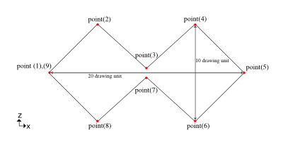
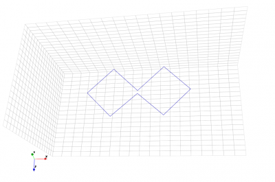
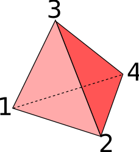
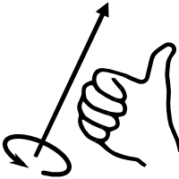

3D Modeling (CSXCAD)
An openEMS simulation always starts by creating a 3D model of the structure using the CSXCAD library. The functions provided by CSXCAD can be classified into two types, properties and primitives. They define material properties and shapes respectively.
All created entities for the simulation are stored in the CSXCAD data structure,
and is usually saved to disk as an .xml file.
Properties
Properties defines the physical property of a material, such as a metal, a thin conducting sheet, a dielectric metarial, a magnetic material. Technically, excitation sources, probes, and field dump boxes are also Properties.
Metal
A metal is a modeled as a Perfect Electric Conductor (PEC) with infinite conductivity. Internally, the PEC is implemented by forcing the tangential electric field in this region to be zero, which is characteristic of an ideal conductor that can’t be penetrated by electric field lines.
If resistive losses are unimportant, one can use PEC rather than a realistic material model for simplicity and efficiency.
Matlab/Octave:
Python:
import CSXCAD
csx = CSXCAD.ContinuousStructure()
metal = csx.AddMetal('plate')
Thin Conducting Sheet
A Thin Conducting Sheet is a simplified model of a resistive conductor, and is the standard choice for modeling resistive metal sheets, plates, and traces.
Modeling thin metal sheets is challenging in FDTD. To capture effects like surface current (skin effect) requires an impractically high resolution mesh. Thus, Thin Conducting Sheet treats the metal as a zero-thickness 2D plane. The resistive loss in metals is simulated using a simplified, behavioral model to “fit” the observed loss rather than the full physics.
Note
Surface roughness modeling is currently not supported.
General Material
A general material is defined by a relative permittivity \(\epsilon_r\), a relative permeability (\(\mu_r\)), an electric conductivity \(\kappa\), and a hypothetical magnetic conductivity \(\sigma\). All parameters are constants that don’t vary with frequency. It can model dielectric materials (such as circuit board substrate), magnetic materials (such as magnetic cores), resistive materials, and 3D metals. Due to the constant-property assumption, this model is not realistic. But it produces acceptable results in simpler applications, and has no simulation overhead.
Dispersive Materials
Debye, Drude, Lorentz materials are advanced models to model dispersive materials.
Nearly all real-world materials exhibit a phenomenon known as dispersion. That is, the speed of light in the medium depends on the EM wave’s frequency. In optics, it manifests as a frequency-dependent refractive index. In RF/microwave engineering, it appears as a frequency-dependent permittivity and permeability. In metamaterial research, one can even deliberately introduce dispersion to control electromagnetic wave propagation in unusual ways.
As a result, while the basic material model with constant permittivity and permeability is sufficient if dispersion is negligible, more demanding simulations call for dispersion models for accurately calculating a material’s wideband response.
See Dispersive Materials for usage.
Primitives
Primitives are the building blocks to create 1D, 2D, 3D shapes, so that one can create simple object such as a Curve, a Polygon, a Box, or a Sphere. More complex structures can be created by combining various primitives. For example, a metal sheet with cylindrical holes can be achieved by combining a metal box with several air cylinders.
Each shape created by a Primitive function is associated with a Property.
List of all available primitives:
Box
Sphere
Spherical Shell
Cylinder
Cylindrical Shell
Curve
Wire
Polygon
Extruded polygon
Rotational solid (based on a polygon)
Polyhedron
Other examples of more complex structures:
Mickey
Sphere Aggregation
Box
The Box is the most simple primitive in CSXCAD. It is as well the most used primitive since it usually matches the given Cartesian or cylindrical FDTD mesh. Furthermore this primitive is the only one which shape depends on the chosen coordinate system it is defined with.
It’s created by the AddBox() function in Octave/Matlab, or the CSXCAD.AddBox()
method in Python.
Matlab/Octave Definition:
CSX = AddBox(CSX, 'propName', 1, start, stop, varargin);
with the following parameters:
CSX: The original CSX structurepropName: name of the assigned propertyprio: priority of the primitivestart:[x y z]first/start coordinatestop:[x y z]second/stop coordinatevarargin: a key/value list of primitives variable arguments
Examples
Create a Cartesian box from
x=[-100 to +100],y=[-50 to 0]andz=[-50 to 10]:CSX = AddBox(CSX, 'metal', 1, [-100 -50 10], [100 0 -50]);
In case of a cylindrical system, create a cylindrical box from
r=[50 to 70],alpha=[pi/2 to 3*pi/2]andz=[-50 to 10]:CSX = AddBox(CSX, 'metal', 1, [50 pi/2 10], [70 3*pi/2 -50]);
Note that although AddCylindricalShell may appear to be the appropriate function to define a cylinder when using a cylindrical coordinate system, AddBox is actually better suited because the structure will be meshed correctly. If AddCylindricalShell is used, it is possible that the meshed cylinder will not be meshed correctly, as shown in the example below.
In case of a Cartesian FDTD setup, define a cylindrically shaped box from
r=[50 to 70],alpha=[pi/2 to 3*pi/2]andz=[-50 to 10]:CSX = AddBox(CSX,'metal',1,[50 pi/2 10],[70 3*pi/2 -50], 'CoordSystem', 1);
Sphere
The sphere primitive is defined by its central point and radius. It is created with:
CSX = AddSphere(CSX, propName, prio, center, rad, varargin)
with the following parameters:
CSX: The original CSX structurepropName: name of the assigned propertyprio: priority of the primitivecenter: coordinate of the center point of the sphererad: radius of the spherevarargin: a key/value list of primitives variable arguments
Example
Create a sphere at (0,0,0) with radius 200:
CSX = AddSphere(CSX,'material',1,[0 0 0], 200);
Spherical Shell
The spherical shell primitive is defined by its central point, radius and thickness. It is created with:
CSX = AddSphericalShell(CSX, propName, prio, center, rad, shell_width, varargin)
with the following parameters:
CSX: The original CSX structurepropName: name of the assigned propertyprio: priority of the primitivecenter: coordinate of the center point of the sphererad: radius of the spherical shellshell_width: thickness of the shell * the inner radius of this shell is rad-shell_width/2 * the outer radius of this shell is rad+shell_width/2
varargin: a key/value list of primitives variable arguments
Example
Create a metal sphere at (0,0,0) with radius 50 and thickness 10:
CSX = AddMetal(CSX,'metal'); %create PEC with propName 'metal'
CSX = AddSphericalShell(CSX,'metal',10,[0 0 0],50,10);
Cylinder
A cylindrical primitive is added by:
CSX = AddCylinder(CSX, propName, prio, start, stop, rad, varargin)
with the following parameters:
CSX: The original CSX structurepropName: name of the assigned materialprio: priority of the primitivestart: [x y z] start point of the cylinder (midpoint of the first cylinder face)stop: [x y z] stop point of the cylinder (midpoint of the second cylinder face)rad: radius of the cylindervarargin: a key/value list of primitives variable arguments
The axis of the cylinder will be along the start - stop points with the two cylinder faces being perpendicular to this axis.
Example:
CSX = AddCylinder(CSX,'metal',1,[0 0 -300], [0 200 300], 300);
Cylindrical Shell
A cylindrical shell is created by the command:
CSX = AddCylindricalShell(CSX, propName, prio, start, stop, rad, shell_width, varargin)
with the following parameters:
CSX: default first argument, containing the CSXCAD data structurepropName: name of the (previously defined) property (e.g. a metal or material)start,
stop: [x y z] coordinates of the start and end points of the cylinder central axisrad: radius of the cylindershell_width: width of the cylinder shell
varargin: a key/value list of primitives variable arguments
Note:
The inner radius of this shell is: rad – shell_width/2 The outer radius of this shell is: rad + shell_width/2
Example
Create a cylindrical shell with radius 30 drawing unit and shell thickness of 5 drawing unit:
CSX=AddMaterial(CSX,'plexi_shield');
CSX=SetMaterialProperty(CSX,'plexi_shield','Epsilon',2.22);
start=[0 0 -40 ];
stop=[0 0 40 ];
CSX=AddCylindricalShell(CSX,'plexi_shield',5,start,stop,30,5);
Curve
A 1D curve is defined by its coordinate arrays:
CSX = AddCurve( CSX, propName, prio, points, varargin)
with the parameters:
CSX: The original CSX structurepropName: name of the assigned propertyprio: priority of the primitivepoints: two-dimensional coordinates of the base polygon * array column refers to point number, array row refers to its x,y,z-position:points(1,point_number): position-x of ‘point_number’.
points(2,point_number): position-y of ‘point_number’.
points(3,point_number): position-z of ‘point_number’.
varargin: a key/value list of primitives variable arguments
Example
This example creates a Biquad antenna from thin metal on y=0, with length of each side= \(\sqrt{50}\):
points(1,1) = 0;points(2,1) = 0;points(3,1) = 0;
points(1,2) = 5;points(2,2) = 0;points(3,2) = 5;
points(1,3) = 10;points(2,3) = 0;points(3,3) = 0.5;
points(1,4) = 15;points(2,4) = 0;points(3,4) = 5;
points(1,5) = 20;points(2,5) = 0;points(3,5) = 0;
points(1,6) = 15;points(2,6) = 0;points(3,6) = -5;
points(1,7) = 10;points(2,7) = 0;points(3,7) = -0.1;
points(1,8) = 5;points(2,8) = 0;points(3,8) = -5;
points(1,9) = 0;points(2,9) = 0;points(3,9) = 0;
CSX = AddMetal(CSX,'metal');
CSX = AddCurve(CSX,'metal',10, points);
 |
 |
Left: Biquad with points annotated. Right: Biquad model. |
|
Wire
Define a cylinder-like wire by its coordinate arrays and radius:
CSX = AddWire(CSX, propName, prio, points, wire_rad, varargin)
with the parameters
CSX: The original CSX structurepropName: name of the assigned propertyprio: priority of the primitivepoints: two-dimensional coordinates of the base polygon * array column refers to point number, array row refers to its x,y,z-position:points(1,point_number): position-x of ‘point_number’.
points(2,point_number): position-y of ‘point_number’.
points(3,point_number): position-z of ‘point_number’.
wire_rad: wire radius
varargin: a key/value list of primitives variable arguments
Example
This example creates a Biquad antenna from wire of radius 0.1 on xz-plane, with length of each side=:math:sqrt{50}:
points(1,1) = 0;points(2,1) = 0;points(3,1) = 0;
points(1,2) = 5;points(2,2) = 0;points(3,2) = 5;
points(1,3) = 10;points(2,3) = 0;points(3,3) = 0.5;
points(1,4) = 15;points(2,4) = 0;points(3,4) = 5;
points(1,5) = 20;points(2,5) = 0;points(3,5) = 0;
points(1,6) = 15;points(2,6) = 0;points(3,6) = -5;
points(1,7) = 10;points(2,7) = 0;points(3,7) = -0.1;
points(1,8) = 5;points(2,8) = 0;points(3,8) = -5;
points(1,9) = 0;points(2,9) = 0;points(3,9) = 0;
CSX = AddMetal(CSX,'metal');
CSX = AddWire(CSX,'metal',10, points,0.1);
Polygon
A polygon is defined by its two dimensional shape in form of a polygon, its normal direction and elevation. It is created by:
CSX = AddPolygon( CSX, propName, prio, normDir, elevation, points, varargin)
Parameters:
CSX: The original CSX structure.propName: name of the assigned property.prio: priority of the primitive.normDir: the normal direction of the polygon (0->x, 1->y, 2->z).points: two-dimensional coordinates p(i,j) of the base polygon.elevation: elevation in normal direction.varargin: a key/value list of primitives variable arguments.
Note
The polygon has to be defined using Cartesian coordinates. For use with cylindrical mesh, set
CoordSystemto0.Each column
jrepresents a vertex in the points matrix. The number of columns equals the number of points.Each row represents projection of the point on the axis in the order of right hand rule. For example: if object is normal to
yaxis (normDir = 1), the first and second row containzandxcoordinates respectively. The number of rows is two.
Example
A star shaped polygon located in normal direction at z = 0:
p(1,1) = -100; p(2,1) = -100;
p(1,2) = 0; p(2,2) = -50;
p(1,3) = 100; p(2,3) = -100;
p(1,4) = 50; p(2,4) = 0;
p(1,5) = 100; p(2,5) = 100;
p(1,6) = 0; p(2,6) = 50;
p(1,7) = -100; p(2,7) = 100;
p(1,8) = -50; p(2,8) = 0;
>> p
p =
-100 0 100 50 100 0 -100 -50
-100 -50 -100 0 100 50 100 0
CSX = AddPolygon( CSX, 'metal', 1, 2, 0, p , 'CoordSystem',0)
Polygon example.
Extruded Polygon
An extruded polygon is defined by its two dimensional base shape in form of a polygon, its normal direction, elevation and thickness. It is created by:
CSX = AddLinPoly(CSX, propName, prio, normDir, elevation, points, Length, varargin)
with the parameters
CSX: The original CSX structure.propName: name of the assigned property.prio: priority of the primitive.normDir: the normal direction of the polygon (0->x, 1->y, 2->z).points: two-dimensional coordinates of the base polygon; see above.length: linear extrusion in normal direction, starting at elevation.varargin: see primitives variable arguments.
Note: The polygon has to be defined using Cartesian coordinates. For use
with cylindrical mesh, set CoordSystem to 0.
Example
A star shaped polygon extruded in z direction:
p(1,1) = -100; p(2,1) = -100;
p(1,2) = 0; p(2,2) = -50;
p(1,3) = 100; p(2,3) = -100;
p(1,4) = 50; p(2,4) = 0;
p(1,5) = 100; p(2,5) = 100;
p(1,6) = 0; p(2,6) = 50;
p(1,7) = -100; p(2,7) = 100;
p(1,8) = -50; p(2,8) = 0;
CSX = AddLinPoly( CSX, 'metal', 1, 2, 2, p , 100, 'CoordSystem',0)
LinPoly example.
Rotational Polygon
An rotational polygon is defined by its two dimensional base shape in form of a polygon, its normal direction, rotational axis and angle of rotation.
It is created by:
CSX = AddRotPoly( CSX, materialname, prio, normDir, points, RotAxisDir, angle, varargin)
with the parameters:
CSX: The original CSX structure.materialname: Name of the assigned material property, created by :func:AddMetal` or :func:``AddMaterial.prio: Priority of the primitive.normDir: The normal direction of the polygon e.g.x,yorz, or numeric (0->x, 1->y, 2->z).RotAxisDir: Rotational axis direction e.g.x,yorz, or numeric (0->x, 1->y, 2->z). * Note` it should be different to normal direction.points: Two-dimensional coordinates of the base polygon; see aboveangle: Rotation angle, optional, default is[0 2*pi](e.g.[0 2*pi]for a full rotation).varargin: see primitives variable arguments.
Note: The polygon has to be defined using Cartesian coordinates. For use
with cylindrical mesh, set CoordSystem to 0.
Example
|
|
Left: Rotational Polygon example. Right: Cone example. |
|

{kind=link}
{kind=link}
The same star shaped polygon, shifted in x-direction and rotated around the x-axis:
p(1,1) = -100; p(2,1) = -100;
p(1,2) = 0; p(2,2) = -50;
p(1,3) = 100; p(2,3) = -100;
p(1,4) = 50; p(2,4) = 0;
p(1,5) = 100; p(2,5) = 100;
p(1,6) = 0; p(2,6) = 50;
p(1,7) = -100; p(2,7) = 100;
p(1,8) = -50; p(2,8) = 0;
p(1,:)=p(1,:)+200; % shift in x-direction by 200
CSX = AddRotPoly(CSX, 'metal', 1, 2, p, 1, [0 pi], 'CoordSystem',0)
A conical solid can be created by rotating a triangular polygon:
p(1,1) = 0; p(2,1) = -100;
p(1,2) = 100; p(2,2) = -100;
p(1,3) = 0; p(2,3) = 100;
CSX = AddRotPoly(CSX, 'metal', 1, 2,p, [1 0 0], [0,2*pi])
Polyhedron
A polyhedron is the most general 3D Primitive available for openEMS. It can be used to create a body with (nearly) any shape by defining a closed surface using verteces and faces.
 |
 |
Left: Tetrahedron, the simplest polyhedron. Right: The right hand rule. When using the right hand the thumb indicates the normal direction of the face and the fingers show the direction how to order the vertices for each face. |
|
A polyhedron is added by:
CSX = AddPolyhedron(CSX, propName, prio, vertices, faces, varargin)
with the following parameters:
CSX: The original CSX structure.propName: name of the assigned property.prio: priority of the primitive.vertices: cell array of all vertices.faces: cell array of all faces.varargin: a key/value list of primitives variable arguments.
Note
The polyhedron must be a closed surface for 3D discretisation
All faces must contain the vertices in a right-handed order with the normal direction for each face pointing out of the solid
Verteces and Faces
A polyhedron is the most general shape that can be defined in openEMS.
Polyhedrons are defined by their vertices and faces. In openEMS each
vertex is an array containing the x, y and z coordinates of the point.
All faces must contain the vertices in a right-handed order with the
normal direction for each face pointing out of the solid. In the example
of the tetrahedron the four faces would be {1, 2, 3}, {2, 4, 3}
and {1, 3, 4}.
Example
Matlab/Octave:
% example tetrahedron
vertices{1}=[0 0 0];
vertices{2}=[1 0 0];
vertices{3}=[0 1 0];
vertices{4}=[0 0 1];
faces{1}=[0 2 1];
faces{2}=[0 1 3];
faces{3}=[0 3 2];
faces{4}=[1 2 3];
CSX = AddMetal(CSX, 'metal');
CSX = AddPolyhedron(CSX, 'metal', 0, vertices, faces);